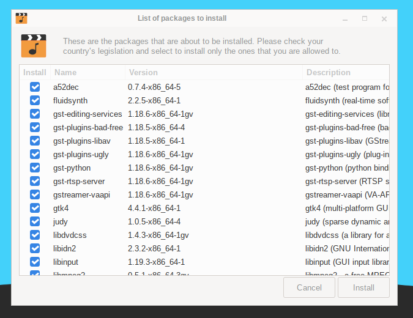

Salix only includes, by default, software that is legally free to use in any country, and that means that proprietary media formats are not configured "out of the box". Most commercial DVDs are encrypted, and that means that you need to install certain codecs to view them. This is legally permitted in most countries but not all. Please check and obtain legal advice if you are unsure whether a particular legal restriction applies to a media format or packages you wish to use in your country.
Salix codecs installer can be found under "Multimedia" in the main application menu, and will conveniently install those codecs which enable the viewing of the vast majority of commercial media formats.
